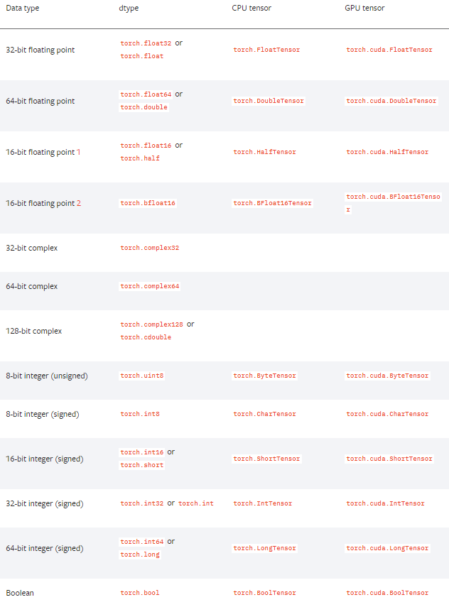

PyTorch Tutorial
指导思想
为了建立清晰的框架，按照建模步骤进行学习不失为一个好的思路
- 得到一个有限的训练数据集合
- 确定包含所有可能的模型的假设空间，即学习模型的集合
- 确定模型选择的准则，即学习的策略（比如损失函数）
- 实现求解最优模型的算法，即学习的算法（比如梯度下降）
- 通过学习算法选择最优模型
- 利用学习的最优模型对新数据进行预测和分析
代码示例
import torch
import torch.nn as nn
from sklearn.datasets import load_boston
boston = load_boston()
class LinearModel(nn.Module):
def __init__(self , ndim ): # 定义类的初始化参数, a,b,c是传入的参数
super(LinearModel,self).__init__()
self.ndim = ndim
self.weight = nn.Parameter(torch.randn(ndim,1))
self.bias = nn.Parameter(torch.randn(1))
def forward(self, x):
# 定义前向计算的输入参数，一般是张量或其他的参数
return x.mm(self.weight) + self.bias
lm = LinearModel(13) # 定义模型实例
criterion = nn.MSELoss() # 定义损失函数示例
optim = torch.optim.SGD(lm.parameters() , lr=1e-6) # 定义优化器实例
data = torch.tensor(boston["data"],requires_grad=True, dtype=torch.float32)
target = torch.tensor(boston["target"][:,np.newaxis],dtype=torch.float32)
for step in range(10000):
predict = lm(data) # 模型预测结果
loss = criterion(predict , target) # 输出损失
if step and step % 1000 == 0 :
print("Loss: {:.3f}".format(loss.item()))
optim.zero_grad() # 清零梯度
loss.backward() # 反向传播(梯度记录在对应张量里)
optim.step() # 梯度下降
API基础
- 得到一个有限的训练数据集合
数据加载
DataSet
import torch
import seaborn as sns
from torch.utils.data import Dataset
class TitanicDataset(Dataset):
def __init__(self):
data = sns.load_dataset("titanic")
self.x_data = torch.from_numpy(data[['pclass','age','fare']].values)
self.y_data = torch.from_numpy(data[['survived']].values)
self.len = data.shape[0]
def __getitem__(self, index):
return self.x_data[index], self.y_data[index]
def __len__(self):
return self.len
DataLoader
| 参数 | 注释 |
|---|---|
| dataset | torch.utils.data.DataSet 类的实例 |
| batch_size=1 | mini_batch的大小 |
| shuffle=False | 是否打乱数据,shuffle=True会构造默认的采样器进行采样 |
| sampler=None | 自定义采样器,构造 torch.utils.data.Sampler实例且设置shuffle=False |
| batch_sampler=None | 同上,返回batch数量的索引 |
| num_workers=0 | 进程数目,默认单进程处理 |
| collate_fn=None | 定义如何把一批dataset转换为包含mini-batch数据的张量 |
| pin_memory=False | 转移数据到Pinned Memory(与GPU内存关联的CPU内存)，加快GPU载入数据速度 |
| drop_last=False | 如果最后一个batch小于设置数目,则丢弃 |
| timeout=0 | 若设置大于0,表示最多等待的时间 |
| worker_init_fn=None | 数据载入的子进程开始时运行的函数 |
from torch.utils.data import DataLoader
titanic = TitanicDataset()
trainloader = DataLoader(titanic, batch_size=4,shuffle=True)
张量创建
- torch.tensor 函数
- 列表 -> Tensor
- Numpy数组 -> Tensor
- 内置函数
- rand [0,1)均匀分布
- randn 标准正态分布
- randint(0,10,(3,3)) 整数均匀分布
- zeros、ones、eye
- 形状拷贝
- {内置函数}_like(t)mul
- 类型拷贝
- t.new_tensor(列表/Numpy数组)
- t.new_{内置函数}(size) ，没有随机元素填充函数
存储设备
两个张量之间的运算只有在相同设备上才能进行
- 创建张量时指定
- torch.randn(3, 3, device="cpu") #默认
- torch.randn(3, 3, device="cuda:0")
- 获取张量所在设备
- t.device
- 转移设备
- t.cpu()
- t.cuda(1)
- 创建张量时指定
张量类型

数据并行化
- 通过学习算法选择最优模型
模型可视化 Tensorboard
在训练过程中，通过可视化能够直观地观测loss的趋势、张量的变化。
SummaryWriter
| 参数 | 说明 |
|---|---|
| log_dir=None | 指定文件存储目录 |
| comment="" | 文件夹名称添加注释信息 |
| purge_step | 如果写入可视化数据崩溃,该步数之后的数据不再写入。数据写入是先进入队列,得到一定的数量触发文件的写入 |
| max_queue | 在写入磁盘之前内存中最多可保留的event(数据)的数量 |
| flush_secs | 多长时间写入一次 |
| filename_suffix="" | 文件名前缀 |
# 安装
pip install tensorflow==1.14.0 tensorflow-tensorboard==1.5.1 tensorboard==1.14.0
# 启动TensorBoard 默认 6006 端口
tensorboard -logdir runs
可视化数据类型
- add_scalars( tag , data , step )
- Scalars 曲线变化趋势
- 一般格式服从Linux目录命名规则 name1/name2/...
- add_histogram( tag , data , step )
- Distribution 最大最小值分布
- Histogram 直方图分布
- add_image( tag , data)
- Image 图片信息
- 默认是 CHW 通道,高度,宽度
- 一次传入多张图片 BCHW
- add_video( tag , data , fps )
- 传入格式 NTCHW T为视频时间的方向
- add_audio( tag , snd_tensor , sample_rate )
- snd_tensor 是一个 1×L的张量,值在[-1,1]之间
- sample_rate 采样频率
- add_text( tag , text_string )
- add_graph() 显示计算图
- add_pr_curve(labels , predictions , num_thresholds , weights) 显示准确率-召回率曲线
调优经验
- 损失上升或者震荡,说明学习率选择偏大,可以尝试降低学习率
- 损失下降缓慢,说明学习率偏小,可以尝试适当增加学习率
- 由于每个mini-batch未必会使得损失下降,可通过Somoothing滑块平滑损失曲线,平均多个mini-batch
- 如果参数的分布一直没有变化,可能模型结构有问题或者梯度无法在模型中得到反向传播
6.利用学习的最优模型对新数据进行预测和分析
在模型选择和推断阶段，都需要建立checkpoint或者加载已有的模型数据,通过存储/加载模型结构和模型、优化器等参数达到想要的效果。
模型保存(序列化器) torch.save
| 参数 | 注释 |
|---|---|
| obj | 模型/张量/状态字典(推荐) |
| f | 文件路径 |
| pickle_module=pickle | 序列化库 |
| pickle_protocol=2 | pickle协议 0~4 |
模型加载(反序列化器) torch.load
| 参数 | 注释 |
|---|---|
| f | 文件路径 |
| map_location=None | 设置迁移环境后的CPU或GPU及名称映射 |
| pickle_module=pickle | 序列化库 |
| **pickle_load_ars | 其它参数传送到 pickle_module.load函数 |
状态字典
与pytorch版本关联性小,推荐以该形式保存
save_info = {
"iter_num":iter_num, # 迭代步数
"optimizer": optimizer.state_dict(), # 优化器的状态字典
"model" : model.state_dict(), # 模型的状态字典
}
# 保存信息
torch.save(save_info,save_path)
# 载入信息
save_info = torch.load(save_path)
optimizer.load_state_dict(save_info["optimizer"])
model.load_state_dict(save_info["model"])
NLP模块
sklearn
- N-gram词频特征
- CountVectorizer
- TF-IDF特征
- TfidfTransformer (基于CountVectorizer的结果)
- TfidfVectorizer
- word embedding层
- nn.Embedding 词向量矩阵 查找表
实战篇
LSTM/Bi-LSTM分类
import numpy as np
import torch
import torch.nn as nn
import torch.optim as optim
def make_batch():
input_batch, target_batch = [], []
for seq in seq_data:
input = [word_dict[n] for n in seq[:-1]] # 'm', 'a' , 'k' is input
target = word_dict[seq[-1]] # 'e' is target
input_batch.append(np.eye(n_class)[input]) # 造embedding向量
target_batch.append(target)
return input_batch, target_batch
class TextLSTM(nn.Module):
"""
LSTM + Linear分类器
"""
def __init__(self):
super(TextLSTM, self).__init__()
self.lstm = nn.LSTM(input_size=n_class, hidden_size=n_hidden,batch_first=True)
self.W = nn.Linear(n_hidden, n_class, bias=True)
def forward(self, X):
outputs, (_, _) = self.lstm(X)
outputs = outputs[:,-1] # B*N*H --> B*H
model = self.W(outputs) # model :B*H x H*O + O --> B*O
return model
class BiLSTM(nn.Module):
def __init__(self):
super(BiLSTM, self).__init__()
# 因为 word embedding 是 one-hot编码，所以 input-size是 n_class
self.lstm = nn.LSTM(input_size=n_class, hidden_size=n_hidden, bidirectional=True,batch_first=True)
self.W = nn.Linear(n_hidden * 2, n_class, bias=True)
def forward(self, X):
outputs, (_, _) = self.lstm(X)
outputs = outputs[:,-1] # B*(H+H) Concat 双向向量
model = self.W(outputs) # model : [batch_size, n_class]
return model
if __name__ == '__main__':
n_hidden = 128 # number of hidden units in one cell
char_arr = [c for c in 'abcdefghijklmnopqrstuvwxyz']
word_dict = {n: i for i, n in enumerate(char_arr)}
number_dict = {i: w for i, w in enumerate(char_arr)}
n_class = len(word_dict) # number of class(=number of vocab)
seq_data = ['make', 'need', 'coal', 'word', 'love', 'hate', 'live', 'home', 'hash', 'star']
model = TextLSTM()
model2 = BiLSTM()
criterion = nn.CrossEntropyLoss()
optimizer = optim.Adam(model2.parameters(), lr=0.001)
input_batch, target_batch = make_batch()
input_batch = torch.FloatTensor(input_batch)
target_batch = torch.LongTensor(target_batch)
# Training
for epoch in range(1000):
optimizer.zero_grad()
output = model2(input_batch)
loss = criterion(output, target_batch)
if (epoch + 1) % 100 == 0:
print('Epoch:', '%04d' % (epoch + 1), 'cost =', '{:.6f}'.format(loss))
loss.backward()
optimizer.step()
inputs = [sen[:3] for sen in seq_data]
predict = model2(input_batch).data.max(1)[1]
print(inputs, '->', [number_dict[n.item()] for n in predict])
源码分析
PyTorch模块组织结构
| 编号 | 模块 | 功能 | 说明 |
|---|---|---|---|
| 1 | torch | 激活函数、张量操作、张量创建 | 张量操作加下划线实现本地修改 |
| 2 | torch.Tensor | 张量类型 | torch.Storage负责底层的数据存储 |
| 3 | torch.sparse | 稀疏张量 | COO格式(Coordinate),长整型定义非零元素的位置，浮点数定义非零元素的值。稀疏张量之间可以做加减乘除运算和矩阵乘法。 |
| 4 | torch.cuda | CUDA相关函数 | 对GPU操作 |
| 5 | torch.nn | 神经网络模块、损失函数 | 继承nn.Module类重写forward方法实现新模块；该模块的内容一般都含有参数 |
| 6 | torch.nn.functional | 神经网络函数（操作）模块 | 另外还有不常用的激活函数 |
| 7 | torch.nn.init | 权重初始化 | 均匀初始化、正态分布归一化等 |
| 8 | torch.optim | 优化器 | 包括学习率衰减算法 |
| 9 | torch.autograd | 自动微分函数 | 还内置了数值梯度功能和检查自动微分引擎是否正确输出的功能 |
| 10 | torch.distributed | 分布式计算模块 | 支持后端MPI、Gloo、NCCL，原理是启动多个进程并行，最后对所有进程权重张量的梯度做规约，然后广播到各模型 |
| 11 | torch.distributions | 采样模块 | 常用于强化学习策略。策略梯度算法，规避离散变量不能求导的问题 |
| 12 | torch.hub | 预训练模型 | list、load |
| 13 | torch.jit | 即时编译器 | 动态图转静态图 |
| 14 | torch.multiprocessing | 多进程API | 进程间共享张量（共享内存），每个进程运行不同模型 |
| 15 | torch.random | 保存和设置随机数生成器状态 | 设置一个统一的随机种子可以帮助测试不同结构神经网络的表现，方便调试 |
| 16 | torch.onnx | 开放神经网络交换格式（ONNX） | 方便不同框架交换模型 |
| 17 | torch.utils | 辅助工具模块 | bottleneck检查模块运行时间方便优化 checkpoint记录计算过程节约内存 cpp_extension定义C++扩展 data数据集和载入器 dlpack定义格式转换 tensorboard可视化 |
张量操作
- 获取形状
- t.size()
- t.shape
- 获取维度数目
- t.ndimension()
- 获取总元素数目
- t.nelement()
- 改变形状
- t.view(3,4)
- t.view(-1,4) 自动推断
- t.view(2,6).contiguous() 不兼容，生成新的张量(兼容:新张量的两个连续维度的乘积等于原来张量的某一维度)
- t.reshape(2,6) 相当于上面的语句
- 获得张量的数据指针
- t.data_ptr 判断底层存储一致性
- 切片和索引
- t[:,3:5,:] 共享内存
- t[:,3:5,:].clone()
- t[t>0] 返回一维向量
- 张量运算
- t.sqrt()
- t.sqrt_() In-Place操作
- torch.sqrt(t)
- keepdim=True 在进行求积、求和、求平均计算的同时，会自动消除被计算的维度，该参数用于保留维度
- 张量的极值运算
- t.argmax(t,1) 只返回位置
- t.max(t,1) 返回元祖 ( value , idx)
- t.sort(-1) 排序 ，返回元祖 (value , idx)
- 张量乘法
- torch.mm 矩阵乘法(线性变换)
- @运算符 同上
- t.mm(t1) 同上
- t.bmm(t1) 批次矩阵乘法 b×m×k @ b×k×n => b×m×n
- torch.einsum("bnk,bkl->bnl" , t , t1 ) 爱因斯坦求和约定
- 张量的堆叠与拼接
- torch.stack([t,t1]) 堆叠(增加维度) 3×4,3×4=>3×4×2
- torch.cat([t,t1]) 拼接(维度不变) 3×4,3×4=>3×8
- 张量的分割与分块
- t.split([1,3],-1) 分成 3×1和3×3两个张量
- t.split(2,-1) 分成 最后一维大小为2的3×2大小的两个张量
- t.chunk(2,-1) 分成 两个张量 (需要能整除)
- 张量维度的扩增与压缩
- t.unsqueeze(-1) 扩维 3×4×1
- t.squeeze() 压缩大小是1的维度
- 张量的广播
- 两个不同维度的张量不能做四则运算
- 两个张量对应维度需要至少有一个维度大小为1或者两个维度大小相等
模块类
- 获取模型参数
- named_parameters
- parameters 返回生成器
- 模型参数初始化由初始化模型的类实例开始
- nn.Parameters继承nn.Tensor ,默认 requires_grid=True
- 几乎所有张量创建方式都有requires_grid参数,一旦设置为True,后序中间结果的张量都会被设置成True
- 模型训练和测试状态转换
- train
- eval
- 获取张量的缓存
- named_buffers
- buffers 返回生成器
- 缓存同样是参数,但是不参与梯度传播，在训练中会得到更新,比如Batch-Norm 均值、方差参数
- register_buffer 注册张量为缓存
- 获取模型的子模块
- named_children
- children 返回生成器
- named_modules
- modules 获取模块中所有模块的信息
- apply函数应用
- 递归地对子模块应用自定义函数
- 模型参数类型、存储设备
- lm.cuda() # 参数转移到GPU
- lm.half() # 参数转换为半精度浮点数 float16
计算图与自动求导
- 梯度与反向传播
- t.grad_fn 导数函数
- t.grad 存储梯度信息
- t.grad.zero_() 梯度清零，默认多次反向传播梯度是累积的
- torch.autograd.backward() 传入根节点张量和初始梯度张量（默认1）
- torch.autograd.grad(数据结果张量,需要对计算图求导的张量) 求梯度方法
- 计算图
- retain_graph=True 反向传播时保留前向计算图
- create_graph=True 创建梯度计算图
- with torch.no_grad() 上下文管理器，不建立计算图，张量没有grid_fn
- t.detach() 与原计算图分离
损失函数与优化器
损失函数
- 模块形式 torch.nn
- 函数形式 torch.nn.functional
- loss.backward() 反向传播，记录梯度在对应张量里
- torch.nn.BCELoss 二分类交叉熵损失
- torch.nn.BECWithLogitsLoss 二分类几率交叉熵损失(直接输入几率,不需要Sigmoid)
- torch.nn.NLLLoss 负对数似然损失（先计算Softmax取对数的结果）
- torch.nn.functional.log_softmax
- torch.nn.CrossEntropyLoss 交叉熵损失(无需提前计算softmax取对数)
优化器
- optim.zero_grad() 梯度清零
- optim.step() 梯度下降
- torch.optim.Adagrad( lr_decay , weight_decay , initial_accumulator_value)
- torch.optim.RMSprop( alpha , eps, weight_decay , momentum , centered)
- torch.optim.Adam( betas , eps, weight_decay , amsgrad)
- torch.optim.lr_scheduler.StepLR(optimizer , step_size=30 , gamma=0.1) 学习率衰减
- torch.optim.lr_scheduler.CosineAnnealingLR 学习率衰减--余弦退火算法